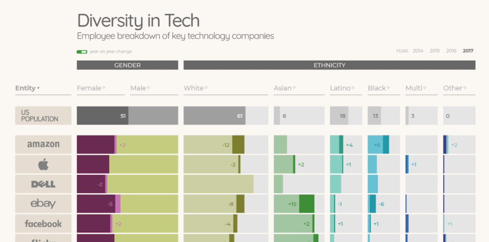
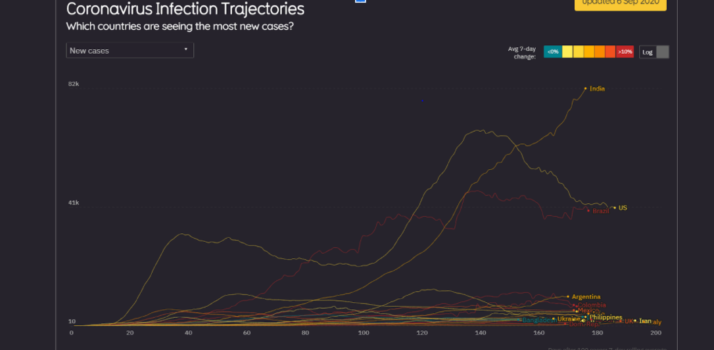
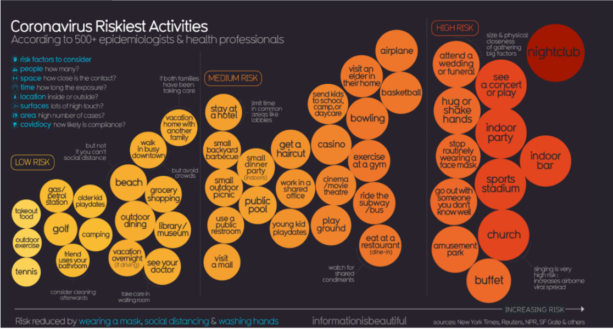

Data Vizualization One
A highly simplified understanding of data visualization is that it aims to represent data through a graphical layout. Tedious, overwhelming and complex data be it statistics or analytics can be presented in a format that is easily digestible. From data visualization, we can easily identify trends, patterns, relationships, stories and anomalies etc. Data Visualization, if done well, offers an effective means of communication that easily relays the data’s intended message. It is important when entering the field of data visualization to research existing examples and observe how they use data visualization tools and methodologies to represent information and what stories the data visualizations are able to tell. Find visual data here
In the form of an interactive bar graph, this data visualization presents statistics concerning diversity in major technological companies within the United States. The user can choose data between 2014-2017 and check the statistics for each company represented. The data shows what percentage of each company’s workforce is male and female, additionally, it displays the percentage of workers from different ethnicities in the company. Depicting both gender and racial diversity statistics. The data is presented in a horizontal bar graph with the percentage listed numerically, alongside a visual representation via the filled-in bar. The user has the ability to order the data for each category in most to least and least to most as well as order the companies alphabetically. Each statistic has its own colour to easily differentiate each statistic and create a readable graph. An additional option is for the user to view the year on year changes so they may effectively track how the industry trends change throughout time. The data is presented in an easy to read and effective manner that truly allows the inequality in the American tech environment to shine glaringly. The graph efficiently tells the story of a male-dominated field and further elaborates that it is a white male-dominated field by showing the exceptionally low statistics of men and women of colour in these companies. Women of colour are especially rare in these companies, illustrating the rampant white male domination in the technology sector. This graph, however, is not live and so it is not up to date with the latest statistics while it works well to observe and illustrate a trend.
Data Visualization Two : Covid-19 data package
This Covid dataset package hosts multiple facets of information on Coronavirus through a multitude of data visualizations, each suitably-picked to show different information. Each data visualization is regularly updated and each holds an element of interactivity. Each data visualization uses a form that illustrates this dense data in an easy way to comprehend and understand the information, displaying data like the global infection rate to a representation of a spectrum of safe and unsafe activities. Each visualization makes sure to appeal to a large audience as this pandemic affects every global citizen and thus this information is of value to everyone. Find visual data here
This line chart depicts the trajectory of infections globally for different countries, Not only does it show the trajectory for infection but we are able to view the trajectories for deaths, new cases etc. The lines are colour coded to illustrate different percentage increases on a scale of 0 to 10. If you hover above a country, individual statistics on the virus are shown for that country. This line graph effectively holds an enormous amount of statistical data that would be almost impossible to comprehend if it was not presented visually. We can visually see the rise and falls of cases and deaths, understanding trends without even having to look at the numbers themselves.
This visualization makes use of colour and categorical placement to effectively demonstrate what activities are high risk for infection and which are low risk. The graph starts from left to right and as it commences moving towards the right size the risk increases. The colours used in the graph represent safety and danger the lighter the colour the lower the risk and as the colours gradually darken we can observe an increase in risk. This effectively communicates to us what we can do without overwhelming anxiety and what we should steer cleer of.
References
- https://informationisbeautiful.net/visualizations/covid-19-coronavirus-infographic-datapack/